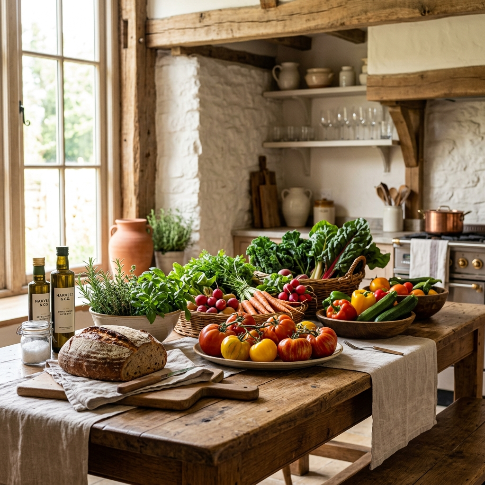

Limited Availability
Fresh Summer Harvest
Grown locally and picked early this morning. Enjoy our curation of summer fruits and seasonal leafy vegetables.
Shop Harvest


We believe in a food system that respects soil biology, honors local farmers, and yields delicious nutrient-dense foods.

Grown locally and picked early this morning. Enjoy our curation of summer fruits and seasonal leafy vegetables.
Shop Harvest
We believe that high-quality food starts with healthy soil and chemical-free practices.

Using compost, crop rotation, and cover cropping to maintain organic matters and vital micronutrients in the ground.

Drip irrigation and rainwater collection minimize runoffs and responsibly manage vital water resources.

Creating safe habitats for bees, butterflies, and natural pest-control insects to protect local ecosystems.
We work directly with passionate local growers who treat the earth with care and supply us with daily fresh harvests.
— Native American Proverb, guide to sustainable stewardship.
Learn Our Sourcing Standards